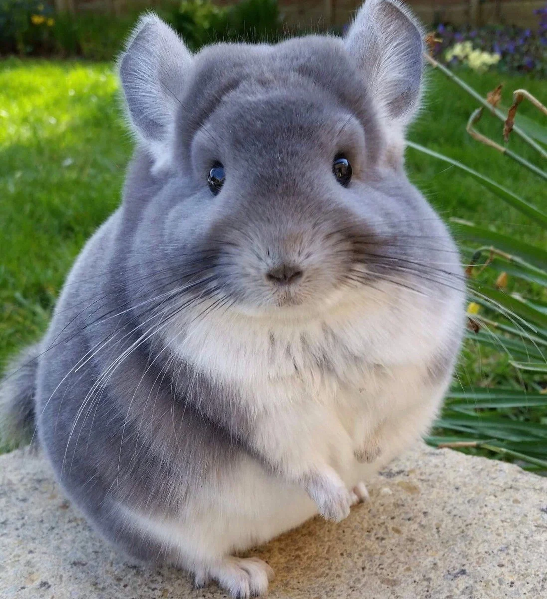
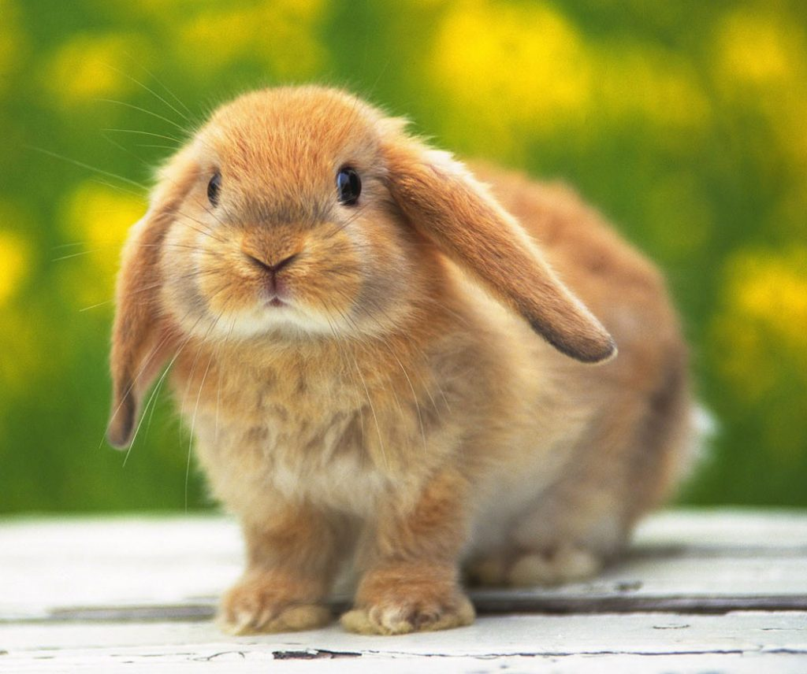
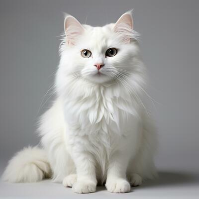
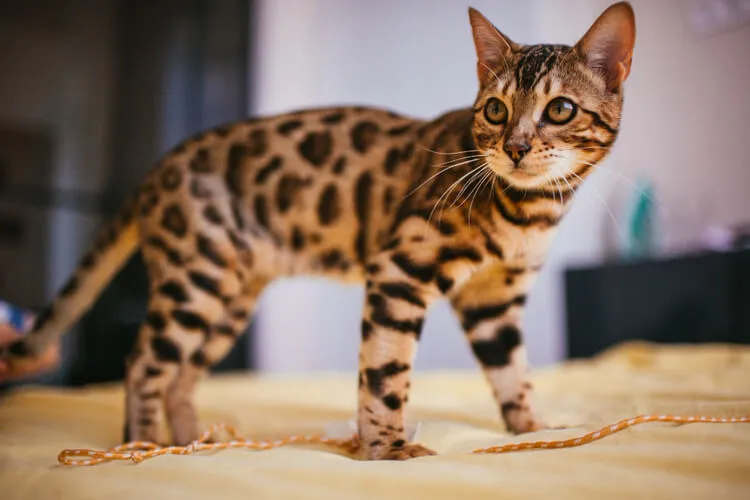
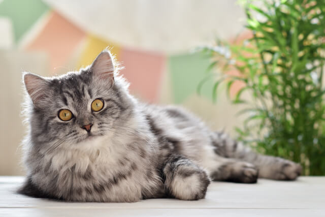
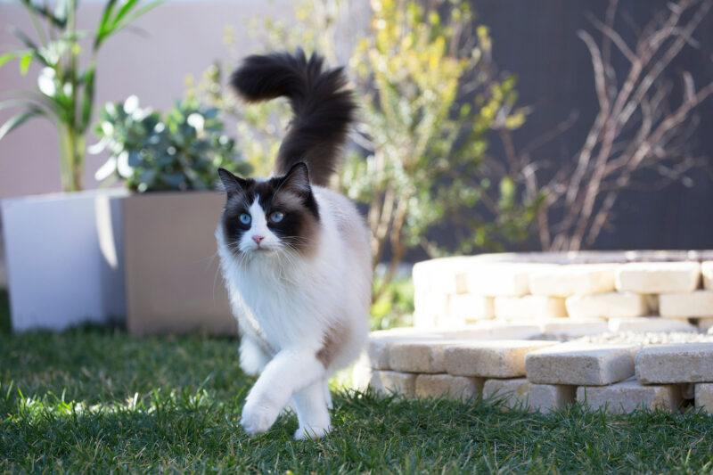
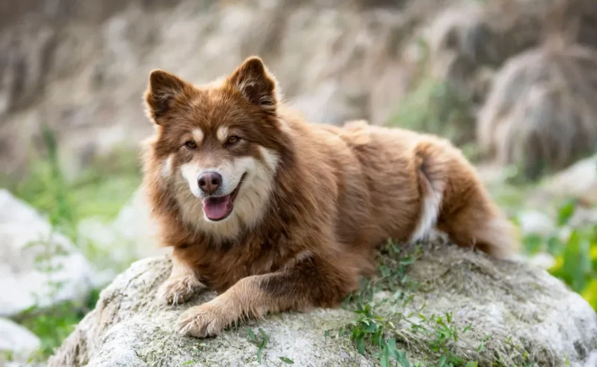

8ª Posição: Chinchila
O chinchila se encontra em 8ª, porém é extramamente fofo e carinhoso
7ª Posição: Coelho
O coelho se em contra 7ª, mas é muito lindo e precioso
6ª Posição: Gato Angorá
O gato Angorá se encontra em 6ª, mas é muito lindo e brincalhão
5ª Posição: Gato-de-bangala
O gato-de-bangala se encontra em 5ª, mas é uma espécie rara e lindo
4ª Posição: Gato Persa
O gato Persa se encontra 4ª, mas é lindo e peludo
3ª Posição: Gato Ragdoll
O gato Ragdoll se encontra no top 3, por ser um gato com uma beleza imcomparável
2ª Posição: Cachorro
O cachorro esta no top 3 por ser lindo e pela sua raça se aparentar com um lobo
1ª Posição: Gato Maine

O gato Maine esta em 1ª por ser um gato muito lindo,grande e peludo